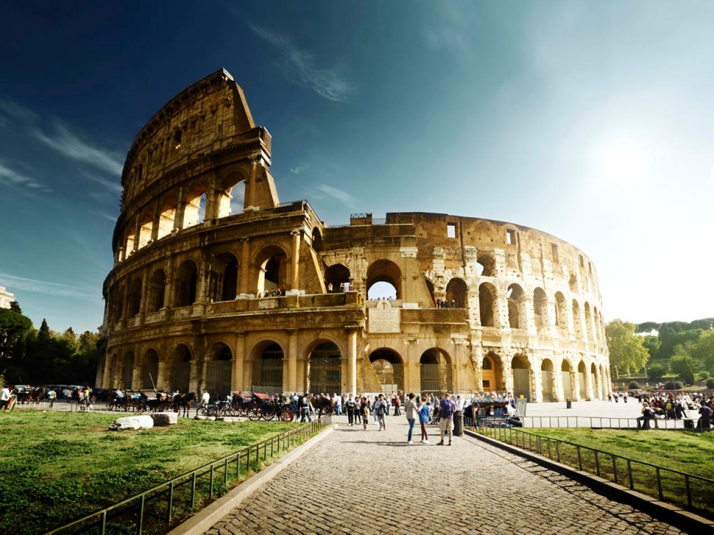
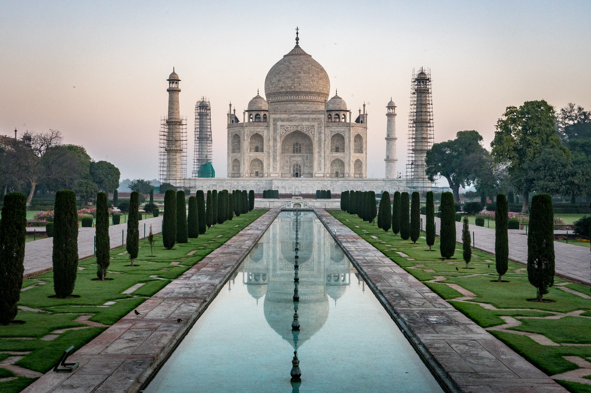

World Heritage Sites
The United Nations Educational, Scientific and Cultural Organization (UNESCO) has, since 1972, painstakingly catalogued a list of places around the world with cultural and natural heritage that are “considered to be of outstanding value to humanity.” We’ve picked out the “must-visits” in each of their respective countries – take a look. Every year, places worldwide are named to the UNESCO World Heritage Site list. But which places are overlooked? Our Twitter community weighs in.
Italys World Heritage Sites brim with vibrant wonders. See the haunting city of Pompeii, discover the birthplace of the Renaissance, and tour breathtaking landscapes.

